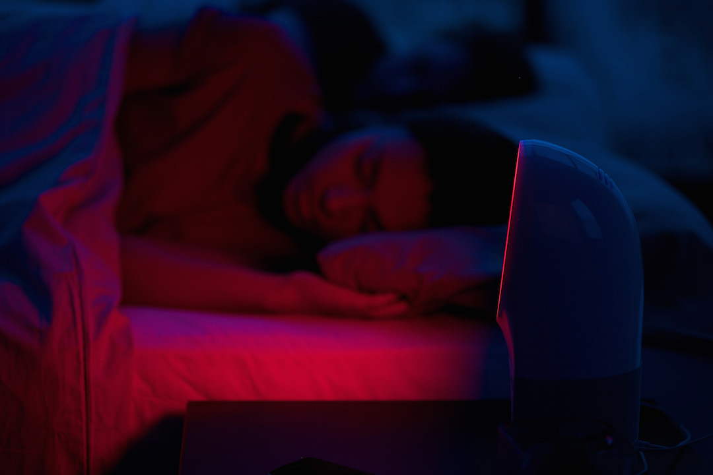

These are the 3 most frequently asked sleep-related questions.
The duration of deep sleep does not depend on the length of time you sleep.
The amount of deep sleep you get depends on the intensity of your activity during the day preceding your night of sleep. For example, significant physical activity increases the amount of deep sleep. Inversely, after a nap in the afternoon, the amount of deep sleep decreases, and the amount of light sleep increases.
However, when we lack sleep, we first catch up on deep sleep. The proportion of deep sleep in a night decreases with age, as the amount of light sleep increases. Hence older people often have the impression of "sleeping badly".
The duration of REM sleep depends entirely on the total duration of your night of sleep: "The longer you sleep, the more you dream." When lacking sleep, we only catch up on REM sleep once we have completely caught up with our deep sleep.
Even if you sleep well, you wake up during the night: we change positions approximately 3 times a night. These arousals generally occur at the end of a cycle, when transitioning from an REM sleep phase to a new deep sleep phase.
If there is no stimulation at this time, we go back to sleep and start a new sleep cycle.
Sources:
Results from the "Prise en charge du patient adulte se plaignant d’insomnie en médecine générale" published by the French National Authority for Health (Haute Autorité de Santé) - Recommendations from the Société Française de Recherche et Médecine du Sommeil - Recommendations from the Institut du Sommeil et de la Vigilance - "Bien dormir, mieux vivre" published by the Institut National de Prévention et d’Education pour la Santé - Recommendations from the Réseau Morphée - Recommendations from the Food and Drug Administration - The Harvard Medical School Guide to A Good Night’s Sleep - American Academy of Sleep Medicine - The "Le sommeil, les rêves et l’éveil" website hosted by the Université de Lyon 1